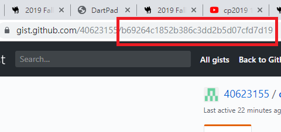
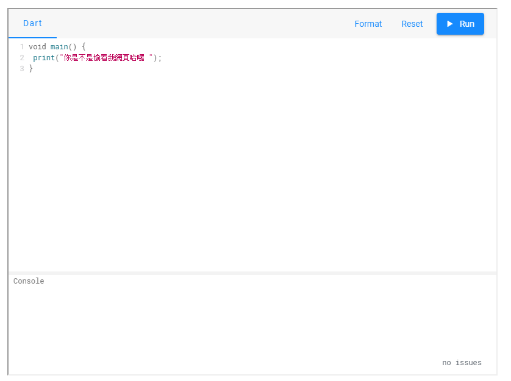

0926 <<
Previous Next >> Videos
1017
參考老師網站
http://mde.tw/cp2019/content/Dart2%20%E5%9F%BA%E6%9C%AC%E8%AA%9E%E6%B3%95.html
學習如何崁入dartpad入網站
重點影片：
步驟：
1.利用dartpad確認程式碼是否為可用
2.複製程式碼>前往github>打開gist
3.建立gist>貼上程式碼>程式檔名後要加上.dart
4.複製建立好的網址後碼>貼上dartpad查看是否能顯示出來
貼上dartpad用法
https://dartpad.dartlang.org/?id=+複製的後碼(紅框部分)

5.崁入近端網站，利用<>功能崁入dartpad功能
崁入dartpad用法
利用<>內字串，會產生出dartpad介面

6.崁入近端網站，利用</>功能崁入dartpad 語法
0926 <<
Previous Next >> Videos